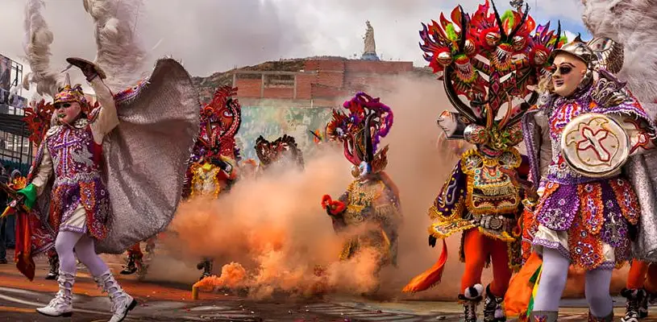

EL CARNAVAL MAS GRANDE DE BOLIVA
El carnaval de Oruro es uno de los eventos culturales más importante de Bolivia, el sincretismo de la herencia precolombina y la tradición cristiana en un gran encuentro de alegría y color.
Los orígenes del Carnaval de Oruro se remontan a antes de la llegada de que los conquistadores españoles. Al principio, era el destino religioso de los indígenas de los Andes que celebraban allí grandes fiestas en honor a los dioses. Los lugareños iban a adorar a la Pachamama (Madre Tierra) y a su antiguo dios Tío.
- Diablada: La diablada es una danza guerrera que representa la lucha entre el bien y el mal.
- Morenada: La morenada es una danza que representa el trabajo de los esclavos africanos en las minas.
- Caporales: Los caporales son una danza que representa a los capataces de las minas.
- Tobas: Los tobas son una danza guerrera que representa a los indígenas tobas.
- Waca-Waca: La waca-waca es una danza que representa a los ganaderos.

Algunos datos interesantes sobre el carnaval de Oruro:
El carnaval de Oruro fue declarado Patrimonio Cultural Inmaterial de la Humanidad por la UNESCO en 2008.
La Entrada Universitaria es el desfile de carnaval más grande del mundo, con más de 28.000 participantes.
Las danzas del carnaval de Oruro son muy elaboradas y requieren un gran esfuerzo físico y dedicación.
El carnaval de Oruro es una celebración importante para la cultura boliviana y es una fuente de orgullo para los bolivianos.